来源：https://wv82w5mav4.feishu.cn/docx/TLaUd0jKdoQahYxomDKcPe3hnuI
各位圈友，大家好，我是天乐，加入许久，但一直潜水，终于下场实操一次发现效果确实不错，赶快给大家分享，希望所有还在犹豫的圈友赶快下场，把手弄脏，直接赚钱！
本次分享：零基础入手目前爆火的公众号绘画赛道
✅ 1。数据完全真实可查且是截止上周的新鲜数据
✅ 2。个人完全零基础入手，没有任何写作基础，但流程跑通后每天半小时即可
✅ 3。更新全部细节流程，入场按这个来就行，喂饭版
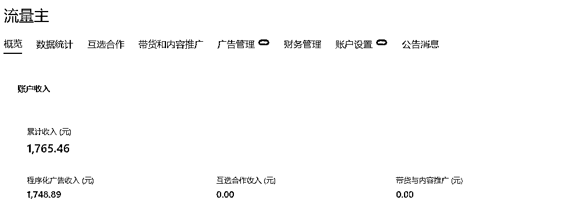
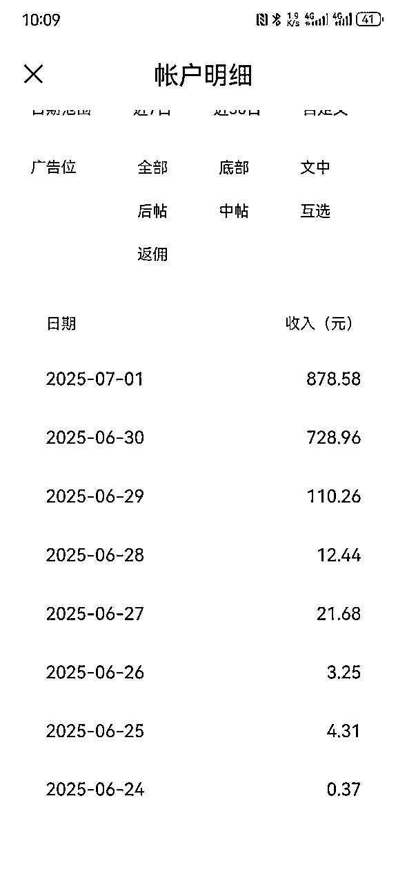
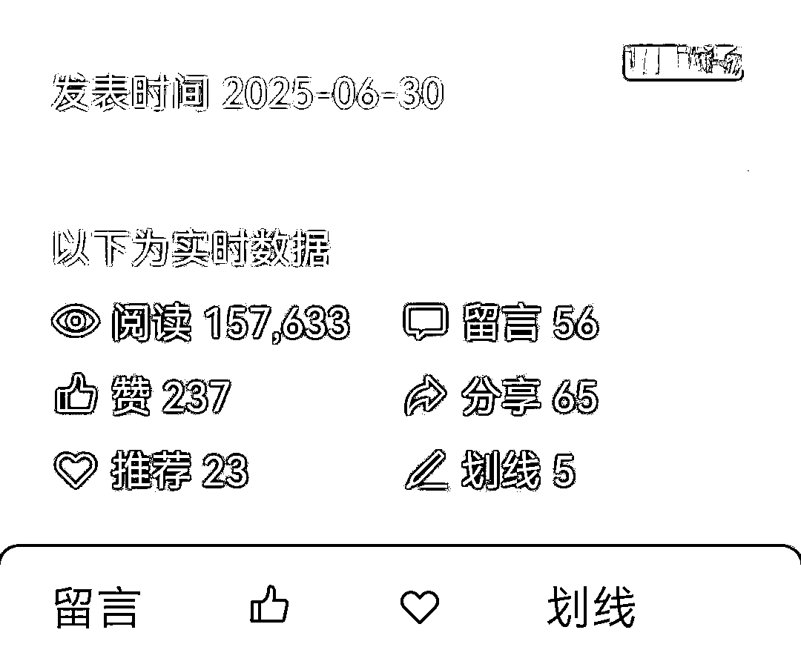
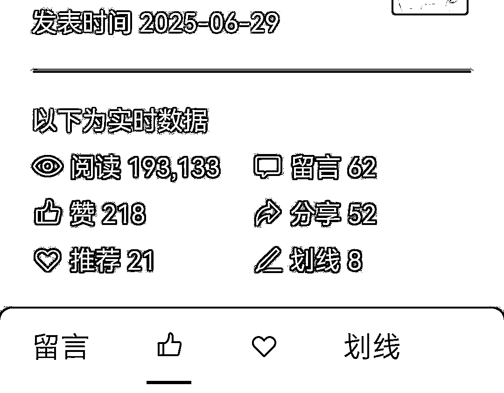
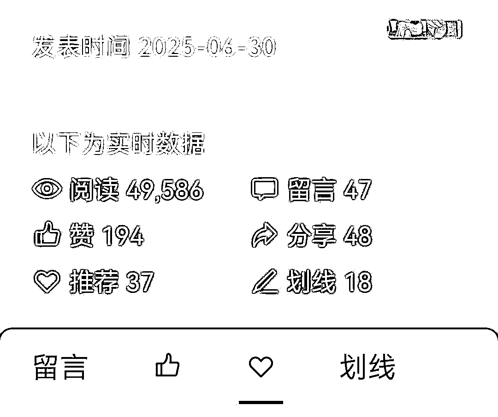
刷星球时候正好看到类似风向标，看着难度不高且可以通过 AI 生产，入手开干！
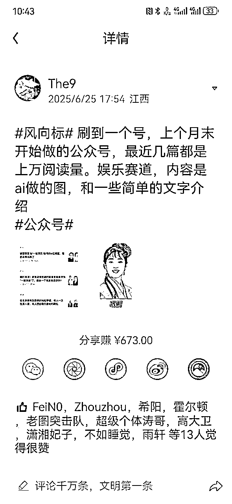
凡是想通过公众号阅读量赚钱，必须开通流量主，目前开通依然需要公众号满 500 粉丝才可以各类广告拉满，所有首先必须解决 500 关注粉丝问题！
6 小时吸引 500 粉丝关注公众号，我是怎么做到的？
实现这个其实也是来自星球圈友分享，通过视频号绑定公众号，然后通过视频号直播发福袋引流关注公众号（设置必须关注才可以抽），6 个小时，500 粉丝轻松拿下，实测有效
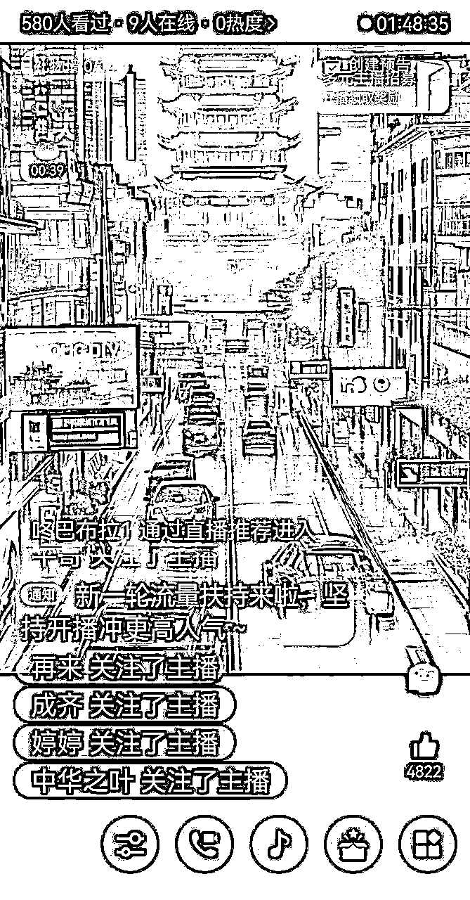
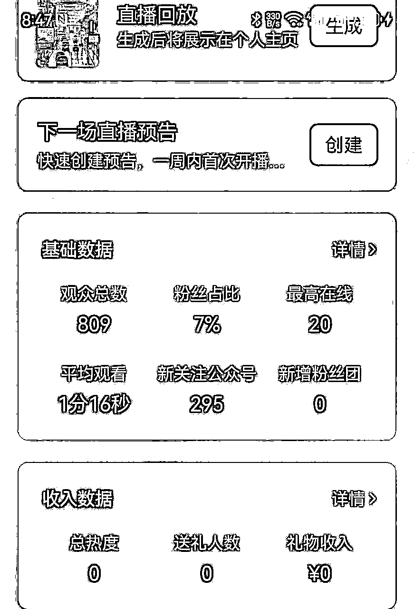
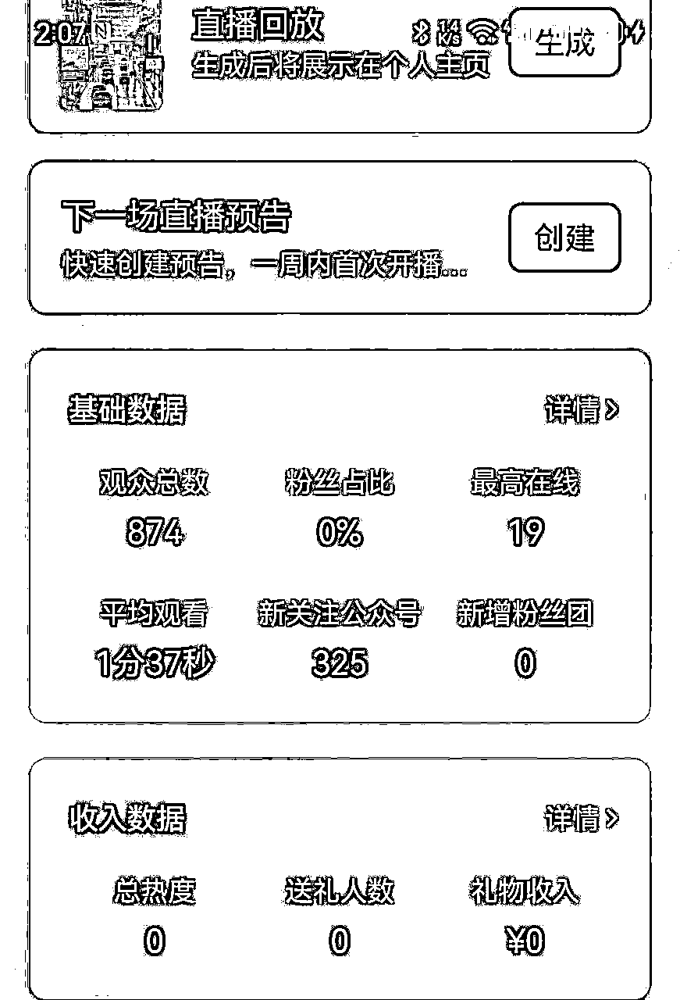
如何通过明星照片生成绘画图片，试过多个 AI 工具，有的是生成效果差，人物直接变形（豆包），有的是识别出明星无法生成（即梦），后来通过星球搜索找到一款小程序基本可以解决问题
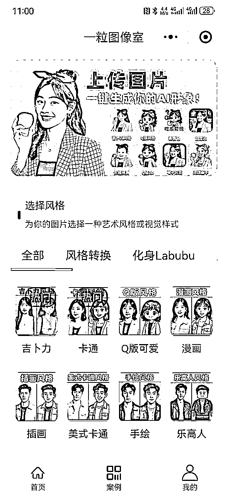
第一步：通过豆包生成内容
1）标题直接选择对标账号爆款 10W+的标题，稍微微修改一下即可
2）内容直接通过下方提示语生成
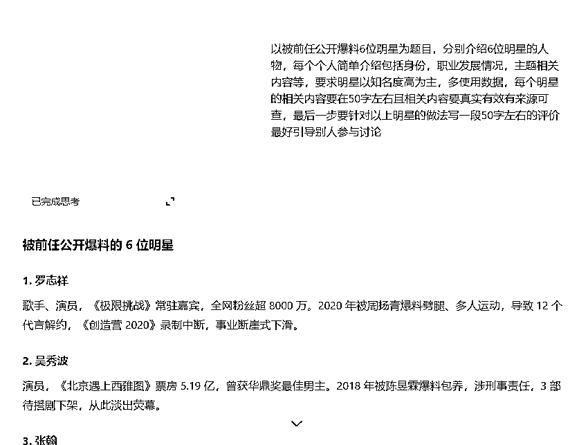
第二步：通过百度各位明星，找到合适照片（可选择变清晰）保存到手机
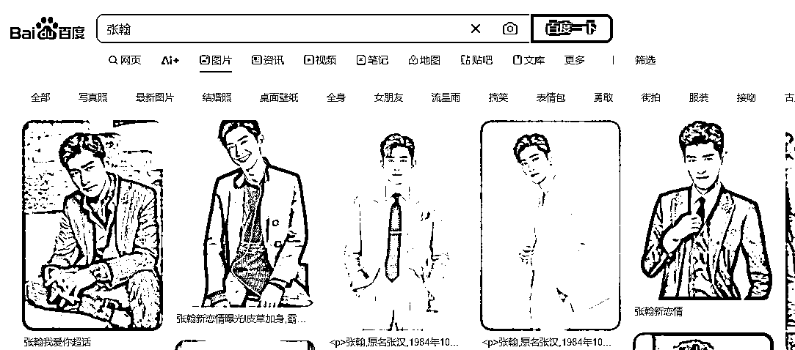
第三步：使用小程序改变照片风格变成绘画
个人比较喜欢手绘图，竖版
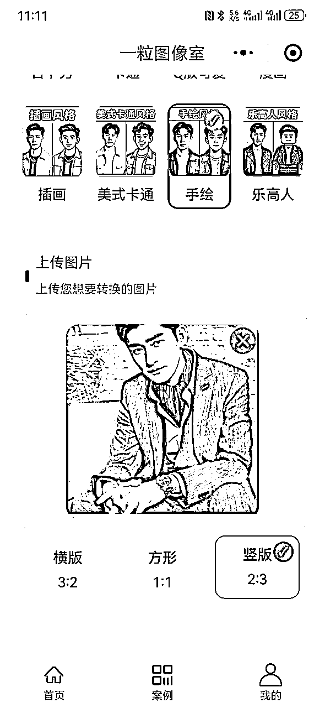
第四步：保存好生成的手绘图，进行背景抠图（美观一点，方便添加文字）
打开美图秀秀手机版，选择智能抠图可以批量抠图
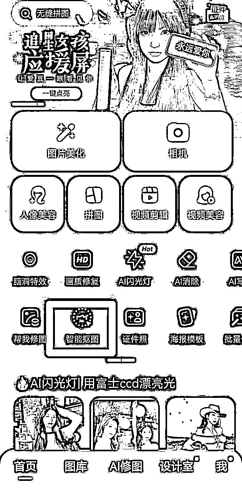
第五步：保存抠图完毕的图片到稿定设计添加文字
打开一张空白页面，然后把图片添加上去，再找到个合适的字体添加文字即可，之后使用直接通过替换图片和文字即可
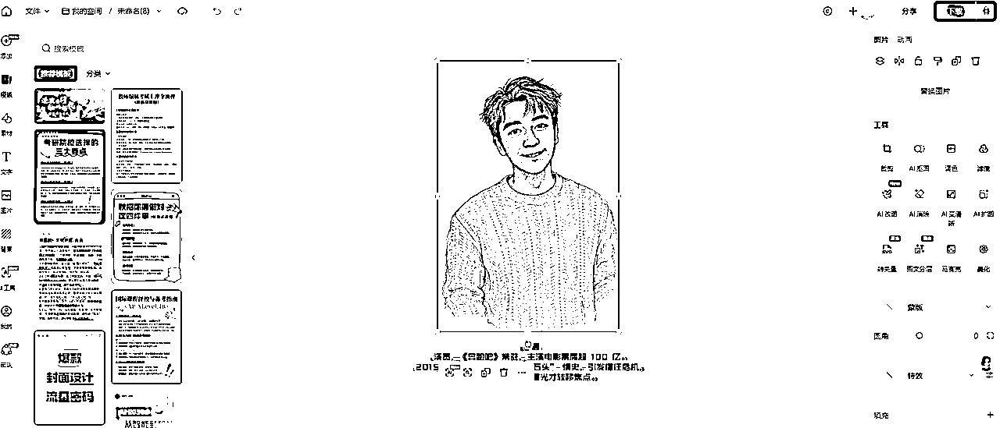
第六步：保存添加好文字的图片，然后设计文章封面
在搞定设计打开一张空白页，然后方便放置 4 个明星绘图，尺寸选择公众号首图 1800*766 即可作为文章封面
第七步：打开公众号平台后依次上传图片，文字评论，来源选择公开报道，设置原创即可
上面的流程是我自行摸索的，可能有不合理或浪费时间部分，但熟悉以后一篇文章至多半小时，也在可以接受范围之内，大家可以根据自己情况进行调整
1.一定要开通原创，由于很多明星事迹都是公开报道所以素材来源要选择来源官方媒体/网络新闻
我自己由于经验不足，没有选择来源开通原创且文字没有和图片放到一起，导致被处罚滥用原创
2。有内容助推券也尽量不要使用，貌似会审核更加严格，非优质内容容易违规，我自己也是血淋淋的教训
3。目前明星，体制内和情感赛道凡是使用绘画的都比较火，大家可以自己选择喜欢的，标题直接模仿 10W 爆款标题不要创新
很高兴有机会进行副业分享，难得赚到钱，希望大家一起生财有术！